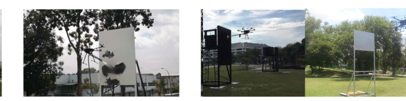

Robotics
Industrial Painting Drone
UAV-based automation for industrial painting workflows in PETRONAS facilities, supporting consistent coverage and safer operations in elevated or constrained environments.
- Contributed to drone autonomy and mission design for repeatable painting tasks aligned with site safety and quality targets.
- Worked with cross-functional robotics and maintenance teams on field integration and demonstration milestones.
Related publication: Small-scale localized maintenance using autonomous UAVs (IEEE ARSO 2021)